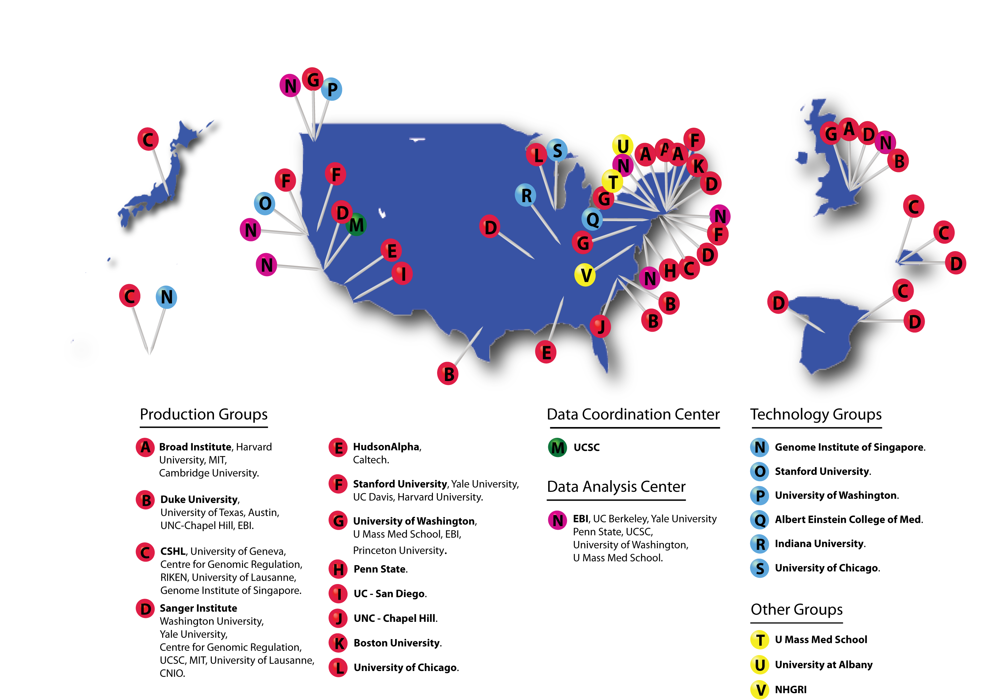

The ENCODE Consortium is composed primarily of scientists funded under RFAs released by NHGRI. Other participants have been identified and brought into the Consortium as appropriate. The Consortium is open to any investigator willing to abide by the criteria for participation established for the ENCODE Project by NHGRI. The ENCODE External Consultants Panel oversees the activities of the Consortium and provides advice and feedback on the Consortium's goals, progress and membership.
Those interested in applying for membership to the ENCODE Consortium should review the ENCODE Project criteria for participation and contact the ENCODE program directors at NHGRI, Elise Feingold, Ph.D., or Peter Good, Ph.D.
A geographic map of ENCODE participants and projects is shown below.
Credit: Ian Dunham (EBI)